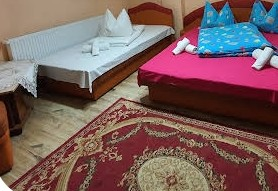
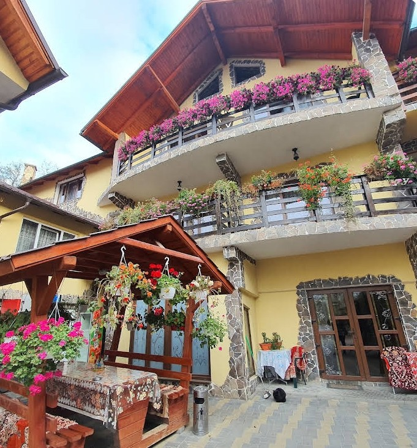

Cameră dublă
Cameră spațioasă cu pat matrimonial, ideală pentru cupluri.
Sighetu Marmației · Maramureș
Liniște, flori la fiecare balcon și ospitalitate maramureșeană, pe malul Izei.
Bine ați venit
Pensiunea Marinela se află în Lazu Baciului, la aproximativ 5 km de centrul orașului Sighetu Marmației, într-o zonă liniștită de pe malul râului Iza. Este punctul de plecare ideal pentru a descoperi satele, bisericile de lemn și tradițiile Maramureșului istoric.
Vă așteptăm cu 11 camere confortabile, fiecare cu baie proprie, o grădină cu foișor și grătar, sală de mese comună și mâncare gătită ca acasă. Oaspeții ne apreciază în special pentru curățenie, camerele spațioase cu balcon și primirea caldă.

Cazare
Toate camerele au baie proprie cu duș, TV, Wi-Fi gratuit și încălzire. Multe dintre ele au balcon.

Cameră spațioasă cu pat matrimonial, ideală pentru cupluri.
Pat matrimonial și pat single – potrivită pentru familii sau prieteni.
Check-in de la ora 14:00 · Check-out până la ora 12:00
La pensiune
Spațiu verde cu foișor din lemn și flori, pentru serile de vară.
Loc amenajat pentru grătar în curtea pensiunii.
Sală comună climatizată și mâncare gătită în casă.
Masă de ping-pong în sala de agrement.
Spațiu de joacă pentru cei mici.
Râul Iza curge chiar lângă pensiune.
Parcare privată în incinta pensiunii.
Internet wireless gratuit în toate camerele.
De vizitat
Distanțe și durate aproximative, cu mașina, de la pensiune.
Muzeu în aer liber cu case și biserici de lemn tradiționale. ~5 km
Fosta închisoare din Sighet, astăzi muzeu-memorial. ~5 km
Sat tradițional, renumit pentru turismul rural și meșteșuguri. ~3 km
Crucile pictate în albastru, unice în lume. ~30 min
Ansamblu monahal din lemn, pe Valea Izei. ~20 min
Ultima cale ferată forestieră cu abur din Europa, la Vișeu de Sus. ~1 h
Rezervări
Completează formularul și îți trimitem cererea direct pe WhatsApp. Te contactăm cât mai repede cu disponibilitatea și tariful. Poți rezerva și telefonic sau prin Booking.com.
Contact
Pensiunea Marinela
Lazu Baciului nr. 167A
Sighetu Marmației, jud. Maramureș
Telefon: 0744 404 459
Fix: 0262 330 198
Pensiunea Marinela pe Facebook
Direcții Google Maps